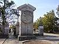
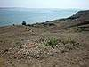
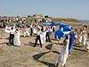
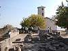
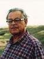

Газета "Вечерний Николаев", 16 сентября 2003 г.
МУЗЫ НА ВЕЧНЫХ ХОЛМАХ
В Национальном историко-археологическом заповеднике "Ольвия" на прошлой неделе прошел международный праздник "Музы Ольвии". |
 |
Музы Ольвии собрались на этих овеянных верностью холмах в полнолуние. В такие моменты обостряется ощущение какого-то магического притяжения к этой точке пространства, где могучие реки Южный Буг и Днепр, сливаясь, образуют Лиман - окно в Черное море, выход в Средиземноморское культурное пространство - колыбель цивилизаций. |
 |
Такое масштабное действо здесь произошло впервые. На ольвийскую землю приехало много гостей. Сценой стала центральная площадь древнегреческого города: здесь, прямо у алтаря Теменоса, ожили картины из жизни древних греков, которые поселились в этих местах более 2500 лет назад. Художественные коллективы из Николаева (театр танца "Ритмы планеты" под руководством Ирины и Василия Паков, народный театр Николая Троянова и другие) как бы оживили древние камни, вдохнули новую жизнь в это открытое всем ветрам пространство, которое в своих холмах хранит память о тысячелетнем античном городе, ценившем искусства, лелеявшем гармонию. |
 |
В ходе праздника состоялись тематические и обзорные экскурсии по заповеднику, концерт бардовских песен, дискуссионный клуб на тему "Ольвия как центр международного туризма". В доме художников Татьяны и Владимира Бахтовых, которые уже давно и плодотворно работают над художественным освоением богатейшего ольвийского материала, открылась "Академия "Ольвия". Здесь, по замыслу художников, студенты-археологи и искусствоведы, гости заповедника смогут - через керамику, гелиограффити, рисунки, ландшафтные проекты - приобщиться к античному наследию на грани искусства и науки. |
 |
На праздник, организованный областным греческим обществом "Эллада" (председатель Александра Маврокордато), Советом национальных обществ Николаевщины, отделением "Союза Восточной и Европейской культуры "Фризия", при поддержке Генерального консульства Греции в Одессе, Института археологии НАНУ и целого ряда других организаций, а главное - энтузиастов, влюбленных в Ольвию, приехали почетные гости из Греции. Для них экскурсию по заповеднику провела начальник Ольвийской археологической экспедиции кандидат исторических наук Валентина Крапивина. Присутствовал на празднике и научный руководитель Ольвийской археологической экспедиции академик Сергей Крыжицкий. В беседе с журналистами председатель областного общества "Эллада" Александра Маврокордато подчеркнула, что целью праздника является утверждение значения культуры как единственной основы и самого прочного фундамента в отношениях между людьми всего мира. Культура - универсальный язык взаимопонимания и согласия между народами. |
 |
Владимир Пучков.